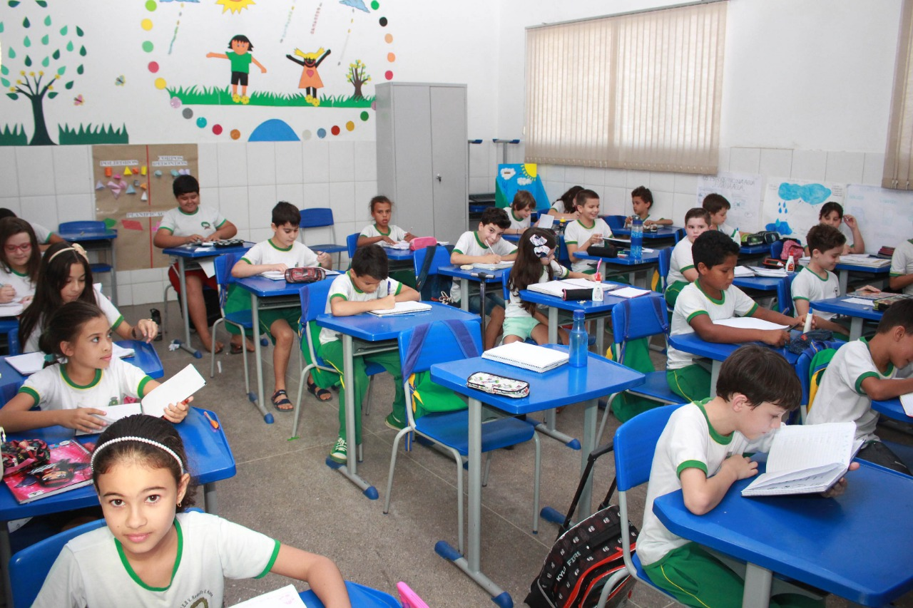

Biografia
Sou professora de Português, meu nome é Luciana. Sou professora particular há vários anos. Escolhi ser professora por causa de uma das minhas professoras primárias, e me dediquei a ser professora de português por amar a língua portuguesa.
Me formei na Universidade de Vassouras aos 22 anos e completei minha especialização em Língua Portuguesa aos 25 anos. Agora, aos 30 anos, escolhi dar aulas particulares para alunos que precisam de ajuda.
Meu Trabalho
Minha turma do fundamental I de quando eu ainda dava aula em escolas públicas.
Surge um novo Amor
Percebi que muitas crianças estavam enfrentando dificuldades com a língua portuguesa, então decidi dar aulas particulares. Assim, ministro aulas para crianças na faixa etária de 8 a 18 anos, com ensino que varia do básico ao avançado.
Para as aulas básicas, prefiro aulas coletivas, enquanto para as aulas intermediárias e avançadas, prefiro ensinar individualmente. Dessa forma, consigo entender as necessidades específicas de cada aluno e ajudá-los de maneira mais eficaz.
Comentários de Alunos
"As aulas da Professora Luciana foram uma verdadeira virada de jogo para mim. Ela tem uma maneira incrível de tornar o português fácil e divertido de aprender. Eu recomendo suas aulas para qualquer pessoa que esteja lutando com a língua portuguesa." - *João*
"Eu estava tendo dificuldades com a gramática portuguesa, mas as aulas da Professora Luciana me ajudaram a melhorar muito. Ela é paciente, compreensiva e realmente se preocupa com o progresso dos seus alunos." - *Maria*
"A Professora Luciana é a melhor professora de português que eu já tive. Ela vai além para garantir que seus alunos entendam o material e estejam confiantes em suas habilidades. Eu não estaria onde estou hoje sem a ajuda dela." - *Pedro*
"Eu não posso agradecer o suficiente à Professora Luciana pelas suas aulas de reforço. Ela tem uma abordagem única para o ensino que realmente funciona. Se você está procurando por aulas de português, não procure mais." - *Ana*
Blog e Recursos Educacionais
A língua portuguesa, com sua rica história e diversidade cultural, oferece um universo de possibilidades para explorar. Desde os primeiros textos escritos em português até a literatura contemporânea, há uma riqueza de conhecimento e beleza a ser descoberta.
Uma das características mais notáveis do português é sua flexibilidade e capacidade de evoluir. A língua tem se adaptado constantemente ao longo dos séculos, incorporando novas palavras e expressões e refletindo as mudanças na sociedade e na cultura.
Além disso, o português é uma língua global, falada por milhões de pessoas em todo o mundo. Isso não apenas aumenta sua relevância, mas também oferece oportunidades para aprender sobre diferentes culturas e perspectivas.
Finalmente, aprender português pode abrir portas para novas oportunidades, seja na carreira, nos estudos ou na vida pessoal. Com a crescente importância do Brasil no cenário global, o domínio do português é uma habilidade valiosa.
Em resumo, a língua portuguesa é uma janela para um mundo rico e diversificado. Seja você um falante nativo ou esteja aprendendo como segunda língua, há sempre algo novo para descobrir e apreciar.
Então é isso! Espero que você tenha gostado do meu site de ajuda em português.
Palavras chave: aulas particulares, professor de português, aulas de português, aula particular de português